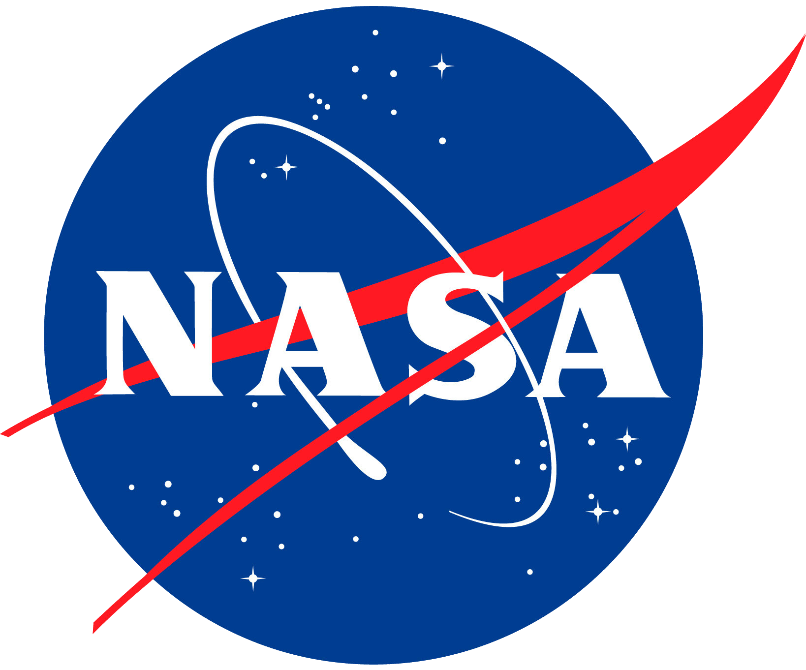

NASA SPACE APPS CHALLENGE 2026 · EQUIPO CHILE
CODE OR DIE
Build a Junior Astronaut Mission Trainer
Iniciando motor WebGL2…
CODE OR DIE
NASA SPACE APPS 2026
JAVIER · Estudiante Ingeniería Informática
GONZALO · Psicólogo
CRISTÓBAL · Estudiante
JAVIER · Estudiante Ingeniería Informática
GONZALO · Psicólogo
CRISTÓBAL · Estudiante
PARADA 01 / 06
Base NASA Pad 39B (Tierra)
CODE OR DIE · Entrenador Espacial
Arrastra para orbitar · Rueda del ratón = acelerador del cohete · PITCH 1:30 recorre las 6 paradas solo
NASA SPACE APPS 2026 · CRÁTER JEZERO
¡Misión Completada!
Gracias por acompañarnos — Equipo CODE OR DIE: Javier, Gonzalo y Cristóbal · NASA Space Apps 2026